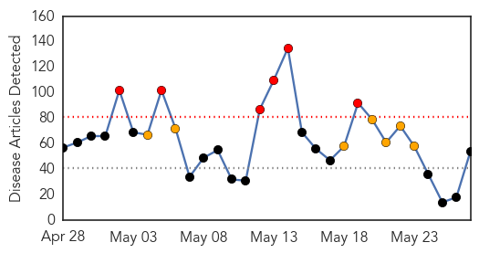
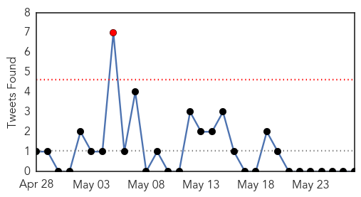
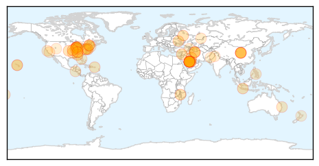

30 Day Trends
Web: 6 alerts, 7 warnings
Twitter: 0 alerts, 0 warnings
Top Articles:
- 0.998
- CDC Expert What Utahans Need to Know About MERS
- 0.997
- CDC expert: what Utahans need to know about MERS
- 0.996
- Slowdown In MERS Cases For Saudi Arabia, Iran Confirms 2 Cases For Disease
- 0.996
- Kuwait to install infra-red cameras to detect MERS
- 0.988
- Iran confirms first two cases of MERS deadly virus
- 0.987
- Iran confirms first two cases of MERS- UPDATED
- 0.987
- Oklahoma: Man dies after acquiring Heartland virus
- 0.985
- WCAX.COM Local Vermont News, Weather and Sports-
- 0.985
- Iran confirms first two cases of MERS
- 0.983
- Two people have died at UAB Hospital after testing positive for Legionnaire's disease
- 0.982
- Iran reports first two cases of MERS virus
- 0.981
- Heartland virus death confirmed in Oklahoma
- 0.975
- Iran confirms first two cases of MERS
- 0.968
- Pace of new MERS infections in Saudi Arabia slows, first cases appear in Iran
- 0.965
- 2 patients die at UAB after testing positive for legionellosis
- 0.963
- RPT-Pace of new MERS infections in Saudi Arabia slows to four a day
- 0.956
- the edge of knowledge
- 0.917
- Chicago Tribune
- 0.917
- Chicago Tribune
- 0.917
- Chicago Tribune
- 0.917
- Chicago Tribune
- 0.917
- Chicago Tribune
- 0.917
- Chicago Tribune
- 0.917
- Chicago Tribune
- 0.917
- Chicago Tribune
- 0.917
- Chicago Tribune
- 0.917
- Chicago Tribune
- 0.917
- Chicago Tribune
- 0.889
- Norovirus Outbreak at Royal Hawaiian Hotel
- 0.866
- A farmer holds bundle of rice during harvest time at paddy field in Padalarang
- 0.866
- Russia ridicules sanctions threats; Poroshenko visit not planned
- 0.866
- Russian says Kiev must stop bloodshed in eastern Ukraine
- 0.860
- Why Are Shingles Cases Rising In The U.S.?
- 0.845
- Editorial: A look at what others are saying
- 0.816
- New map shows the goal of all Africans accessing clean water by 2030 'realistic and achievable'
- 0.798
- Governor signs Lyme disease treatment bill into law
- 0.783
- Wolverine 900 Ton Recall, 11 Ill; Foster Farms No Recall, 708 Ill
- 0.750
- E. Coli Detected at Benton County Swimming Area
- 0.704
- Lyme tests fail patients, says expert
- 0.685
- ASPA aid for some affected by diarrhea outbreak
- 0.655
- Hosted by the Pan American Health Organization and El Salvador’s Ministry of Health
- 0.630
- Long-term Lyme treatment doesn't burden insurers, panel says
- 0.623
- Region, The Freeman Sections, The Freeman
- 0.619
- Russia battles fresh foot-and-mouth outbreak
- 0.607
- Doctor develops simple treatment for flesh-eating disease
- 0.595
- US News & World Report's #1 Hospital and NCQA's #2 Insurance Company, Partner Together to Better Serve the Community
- 0.584
- Condom double cross: California risks more disease from its cost cutting
- 0.575
- Detroit packing company recalls 1.8M pounds of ground beef
- 0.575
- Tackling Drug-Resistant TB
- 0.526
- Polio requires effective vaccination: PIMA
Showing top 50 articles...
Top Tweets:
- 0.542
- Paciente abandona recinto hospitalario sin alta médica: En extrañas circunstancias un paciente de 49 años de e... http://t.co/ZNRSEANNba
Web/News Articles
Tweets
Article Locations
Article Confidences